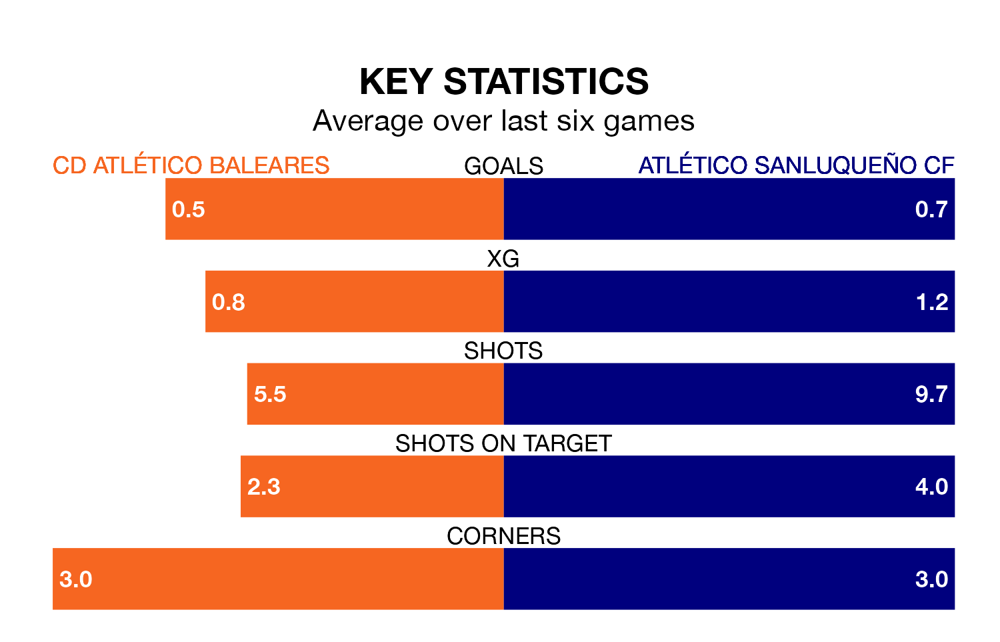

CD Atlético Baleares face Atlético Sanluqueño CF on Sunday looking to secure a first win in six Primera Division RFEF Group 2 games.
Atlético Baleares have lost two and drawn three matches since they last earned three points – against CD Alcoyano on December 3.
They face an Atlético Sanluqueño side who have won two and drawn one over that time.
Atlético Baleares are 17th in the table after 20 games, of which they have won four and drawn five, earning 17 points.
Atlético Sanluqueño are two places ahead of the hosts in 15th, with five wins and six draws putting them on 21 points.
With 12 goals in 20 games so far this season, Atlético Baleares are the league's joint-third-lowest scorers with 0.6 goals per game. And they are conceding more than average, letting in 33 goals at a rate of 1.6 per game.
The away side are also below average scorers, with 1.1 goals per game, compared to a league average of 1.2. They have conceded 1.3 goals per game.
In the last three years, Atlético Baleares and Atlético Sanluqueño have played each other on three occasions. Atlético Sanluqueño won two of them and they drew once.
Their last meeting was on September 17, when Atlético Sanluqueño won 5-0 at home.
Atlético Baleares's last match was on January 21, a 2-0 loss against Real Murcia.
Atlético Sanluqueño beat Real Madrid B 2-1 last time out, on January 20.
Updated: 09:07 (UTC), 24/01/24